Путь до оплаты: (Лавка и ВкусВилл)
Задача: "С телефона заказать к завтраку молоко, хлеб и яйца на доставку по Москве". Один и тот же путь в двух сервисах, от первого экрана до оплаты. На вводе телефона остановилась.
Что сравнивала: сколько нажатий до оплаты, видно ли цену доставки и итог до входа, как работает поиск, в том числе с опечаткой, что мешает по пути. Адрес публичный: Тверская улица, 7.
Почему эти двое: сначала выбрала Самокат, но его сайт закрыт защитой от роботов. Лавка работает так же: свои склады и доставка за 5-35 минут. ВкусВилл для контраста: сеть магазинов со своей доставкой.
- Сравнительный анализ
- Путь пользователя
- Подсчёт шагов
- Мобильная версия
4 / 7
нажатий, чтобы указать адрес6 / 2
товаров на первом экране поиска~12 / ~14
нажатий до оплатыда / нет
нужен вход до оформленияИтог по этапам
| Этап | Удобнее | Почему |
|---|---|---|
| 1. Первый экран | Лавка | оба тянут в приложение, но Лавка не закрывает сайт целиком |
| 2. Адрес доставки | ничья | Лавка быстрее, ВкусВилл понятнее |
| 3. Поиск | Лавка | нужный товар виден без прокрутки, фильтры отвечают на частый вопрос "какой жирности" |
| 4. Добавление в корзину | ничья | обе схемы быстрые, у каждой своя неожиданность |
| 5. Корзина и цена | ВкусВилл | видно, из чего складывается сумма |
| 6. Оформление | ВкусВилл | можно заказать без регистрации, но окна и противоречие с промокодом мешают |
Этапы со скриншотами
1. Первый экран
Яндекс Лавка
Сайт виден сразу, поверх него шторка "Где продолжим?" и плашка приложения сверху. Кнопка приложения жёлтая, "Остаться" серая.

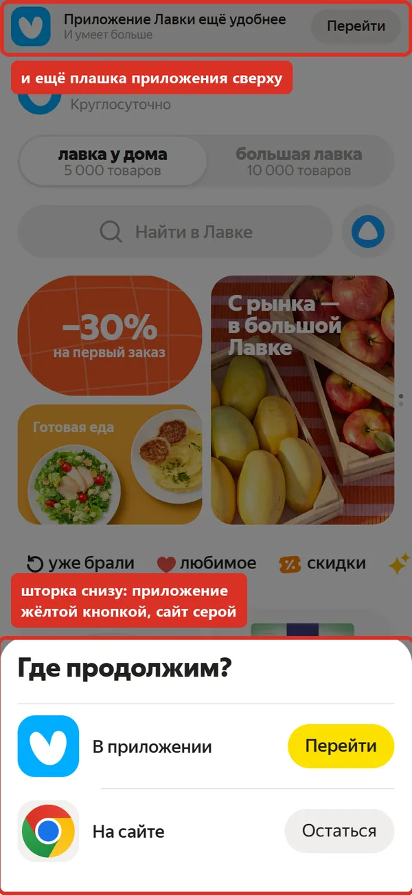
ВкусВилл
Окно с призывом в приложение на весь экран, сайта за ним не видно. Кнопка приложения зелёная, "Остаться на сайте" серая.

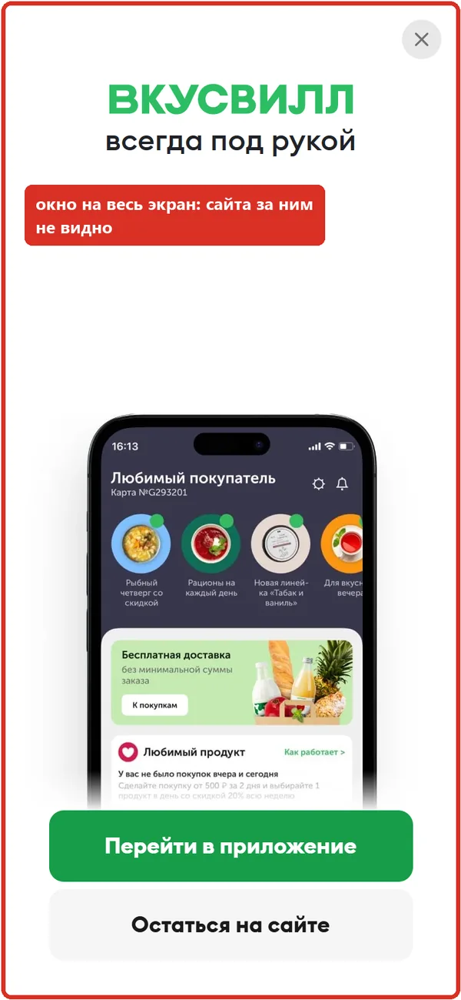
Удобнее: Лавка, оба тянут в приложение, но Лавка не закрывает сайт целиком.
2. Адрес доставки
Яндекс Лавка
4 нажатия, считая "Остаться" на первом экране. Но поле заранее заполнено случайным адресом (у меня "Краснобогатырская улица, 79"), его приходится стирать. Зачем нужен адрес, не сказано.

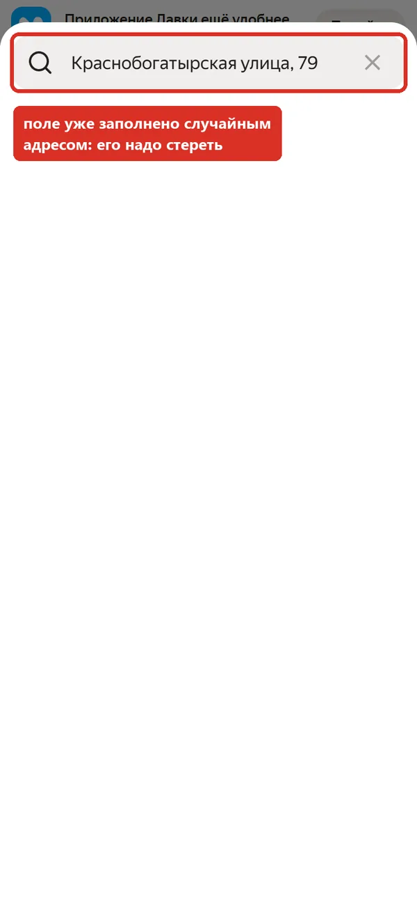
ВкусВилл
7 нажатий, считая "Остаться на сайте": адрес в шапке, "Добавить новый адрес", поле, подсказка, "Выбрать" и обязательный выбор времени доставки. Зато сразу объясняет: от адреса зависят ассортимент и цены.

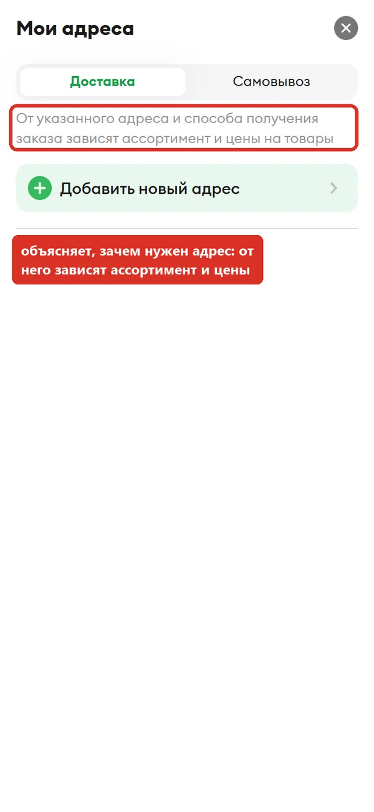
Удобнее: ничья, Лавка быстрее, ВкусВилл понятнее.
3. Поиск
Яндекс Лавка
"молоко": на первом экране 6 товаров, быстрые фильтры по жирности (2,5%, 3,2%), "+" на каждой карточке. Опечатку "малоко" исправляет.

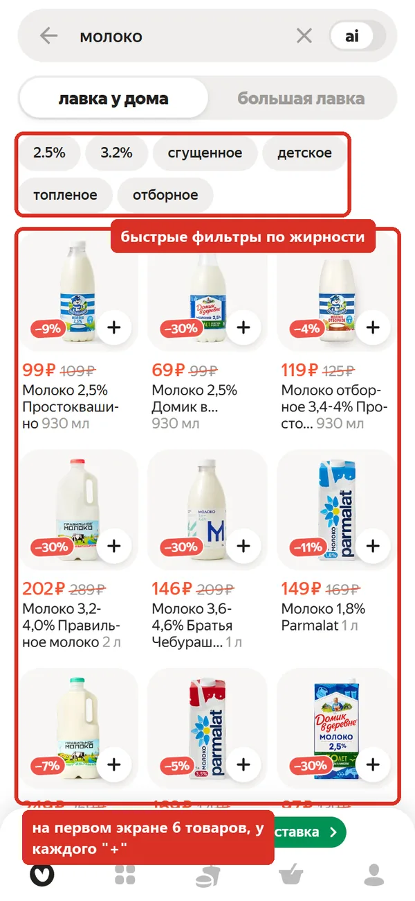
ВкусВилл
"молоко": 564 результата, но на первом экране 2 товара: выше баннер, адрес, меню, хлебные крошки и крупный заголовок. Есть рейтинг и остаток на складе. Опечатку тоже исправляет.

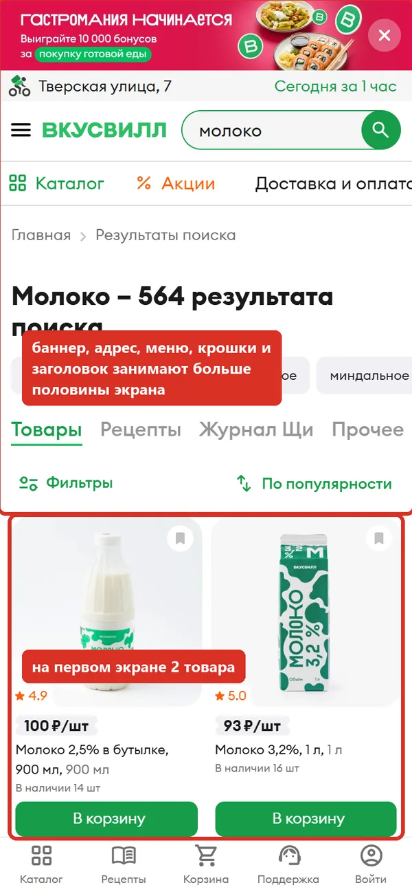
Удобнее: Лавка, нужный товар виден без прокрутки, фильтры отвечают на частый вопрос "какой жирности".
4. Добавление в корзину
Яндекс Лавка
Одно нажатие на "+", кнопка становится счётчиком, на значке корзины цифра. Сразу под товаром вставляется блок "Часто берут вместе" и сдвигает выдачу вниз.

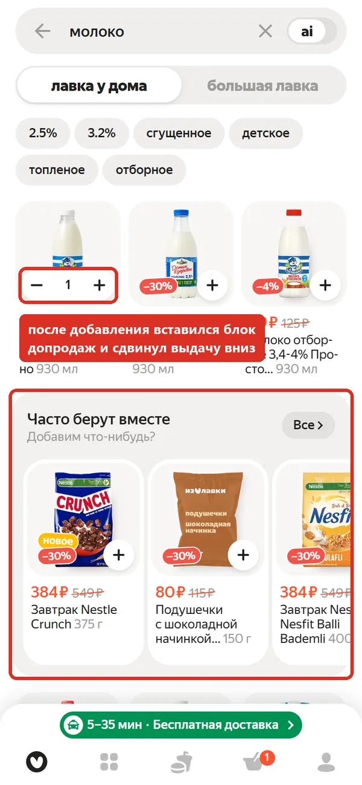
ВкусВилл
Одно нажатие на "В корзину", кнопка становится счётчиком, в меню видна сумма. Но за молоко 100 ₽ там уже 108 ₽: пакет добавлен сам, объяснение есть только в корзине.

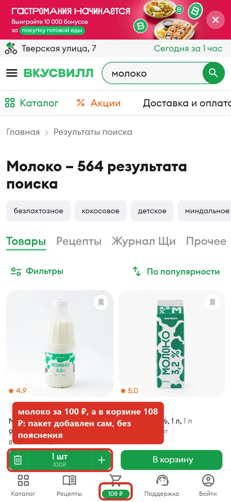
Удобнее: ничья, обе схемы быстрые, у каждой своя неожиданность.
5. Корзина и цена
Яндекс Лавка
Время и цена доставки в самом верху (5-35 мин, 0 ₽), итог 325 ₽ на большой кнопке "К оплате". Ниже два блока допродаж: "Порадовать себя" и "Подобрали для вас".

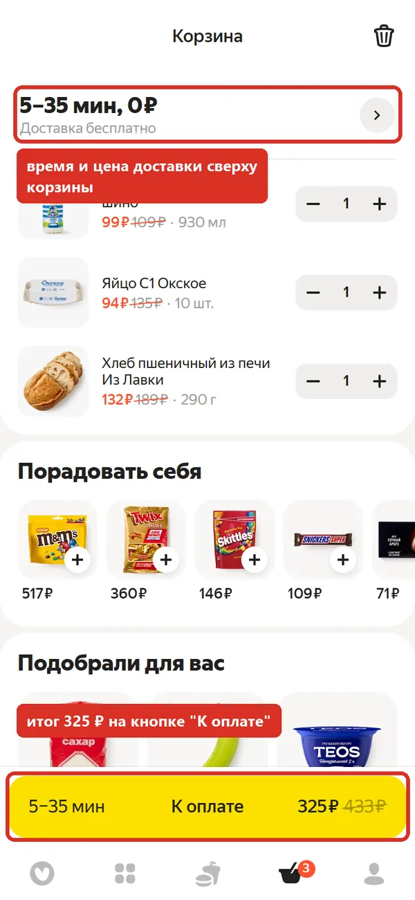
ВкусВилл
Подробный итог: вес 1,83 кг, доставка 0 ₽, упаковка 8 ₽, всего 299 ₽. Пояснение, что сумма спишется после сборки.

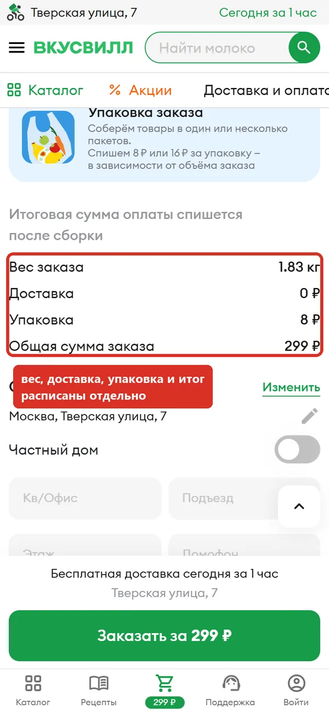
Удобнее: ВкусВилл, видно, из чего складывается сумма.
6. Оформление
Яндекс Лавка
"К оплате" сразу ведёт на вход в Яндекс ID по номеру телефона. Пока не войдёшь, не видно ни способа оплаты, ни деталей доставки.

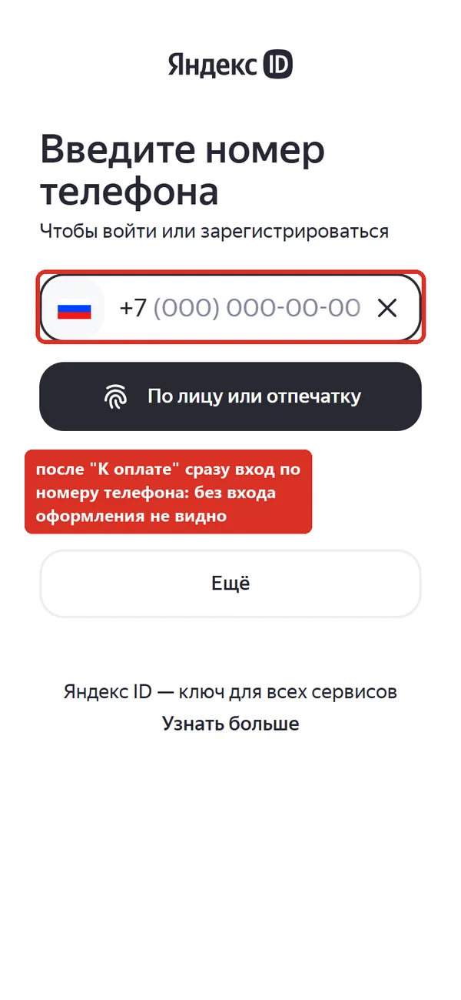
ВкусВилл
Оформление на той же странице, без входа: телефон, email, способ оплаты. Но при прокрутке сразу два окна: промокод "-200 ₽ на первый заказ" и подсказка про подарочные карты. А поле промокода пишет "Доступно только авторизованным пользователям".

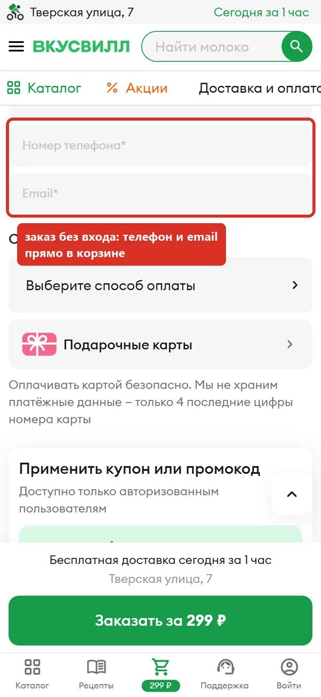

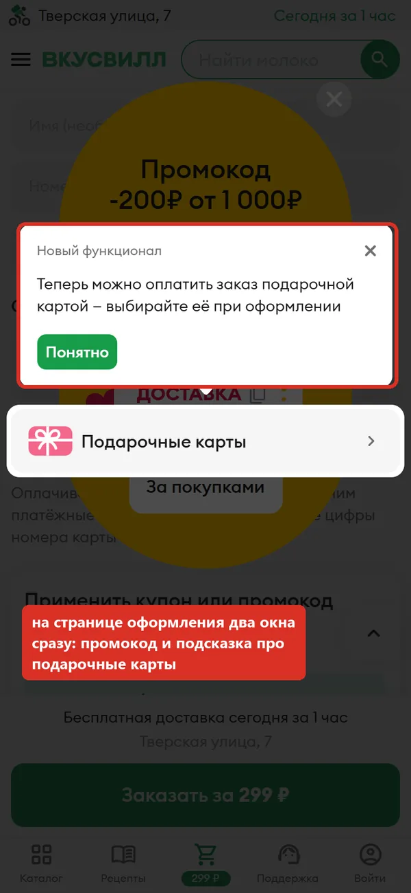
Удобнее: ВкусВилл, можно заказать без регистрации, но окна и противоречие с промокодом мешают.
Что каждому стоит взять у другого
Яндекс Лавке
- Не подставлять в поле случайный адрес: пустое поле с подсказкой "Улица и дом" понятнее.
- Показывать, что будет после "К оплате", и дать оформить заказ без входа, а телефон спросить в конце.
- Не вставлять блок допродаж посреди выдачи: человек ищет молоко, а список прыгает.
- Добавить подписи к значкам нижнего меню: сейчас только иконки.
ВкусВиллу
- Заменить окно на весь экран компактной плашкой, как у Лавки.
- На мобильном убрать хлебные крошки и уменьшить заголовок в поиске, чтобы товары были видны без прокрутки.
- Писать про пакет 8 ₽ рядом с суммой в меню или при первом добавлении.
- Не показывать окна на странице оформления, а промокод для первого заказа давать и гостю, раз его предлагают.